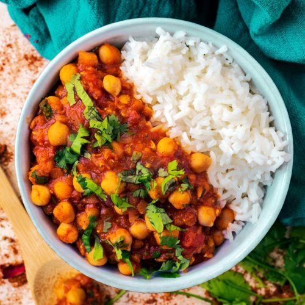

Spinach and Chickpea Moroccan Style Stew

Spinach and Chickpea Moroccan Style Stew
with Feta and Couscous
Looking for a quick and tasty midweek dinner option? Try cooking up our Spinach & Chickpea Moroccan Style Stew in just 20 minutes for a delicious and speedy meal.
Allergens: Cereals containing gluten
Ingredients
- 100g Tangine paste
- 100g Feta cheese
- 1 carton Tomato passata
- 2 units Garlic clove
- 40g Dried Apricots
- 50g Vegetable stock paste
- 100g Baby spinach
- 1 Onion
- 250g Chickpeas
- Flat leaf parsley
- 120g Couscous
- 240ml Water for the Couscous
- 1tsp Sugar
Instructions
-
Fill and boil your kettle. Halve, peel and thinly slice the onion. Roughly chop the apricots. Peel and grate the garlic (or use a garlic press). Drain and rinse the chickpeas in a colander.
-
Pour the boiling water for the couscous into a saucepan and bring back to the boil. When boiling, remove from the heat, stir in the couscous and half the veg stock powder. Pop a lid on the pan and leave to the side for 8-10 mins or until ready to serve.
-
Meanwhile, heat a drizzle of oil in a large frying pan on medium high heat. Once hot, add the onion and cook until softened, 4-5 mins. Stir occasionally. Stir in the garlic, tagine paste and dried apricots. Cook for 1 minute.
-
Stir in the passata, water (see ingredients for amount) and remaining stock powder. Season with salt and pepper and add the sugar (see ingredients for amount). Add the chickpeas and simmer until the sauce has thickened slightly, 4-5 mins. Stir in the spinach in handfuls and cook until wilted and piping hot, 2-3 mins.
-
While the stew cooks, roughly chop the parsley (stalks and all). Break up the feta into small chunks. Fluff up the couscous with a fork and stir through a drizzle of olive oil and half the parsley. Taste the couscous and add salt and pepper if you feel it needs it.
-
Taste the stew and add salt and pepper if you feel it needs it. TIP: Add a splash of water too if you feel it needs loosening up a bit. Serve the couscous in bowls, spoon the stew on top and finish with the feta and remaining parsley. Enjoy!
See more recipes